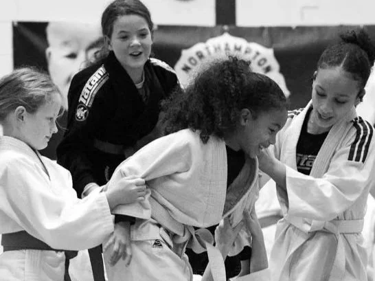
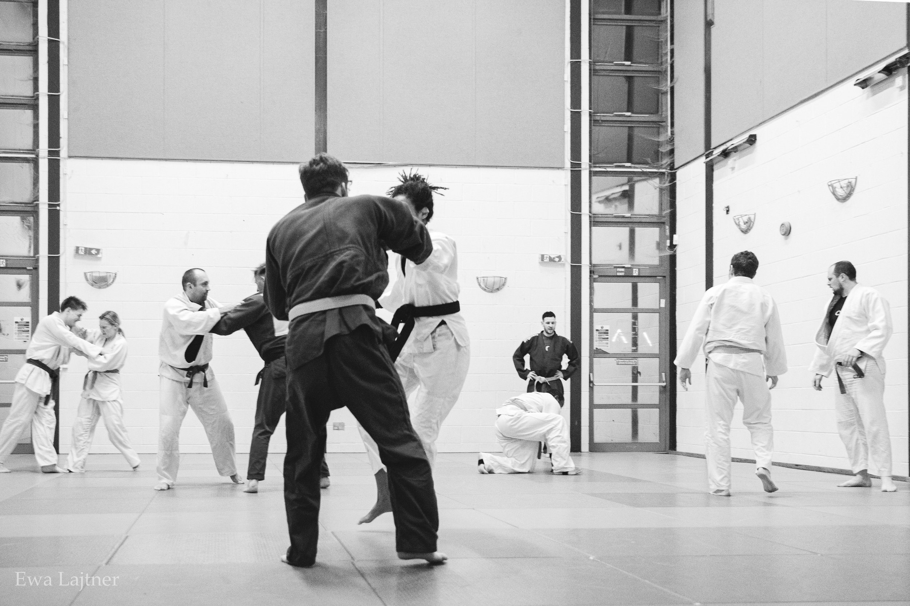
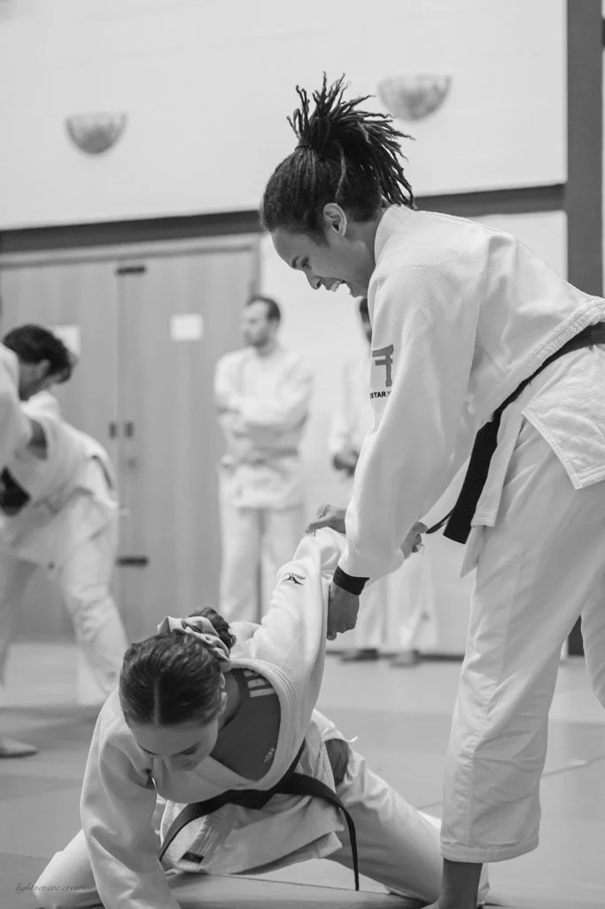
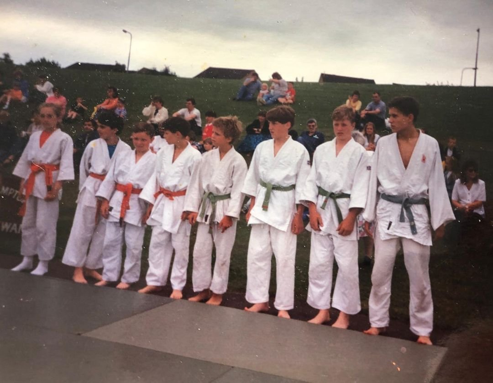
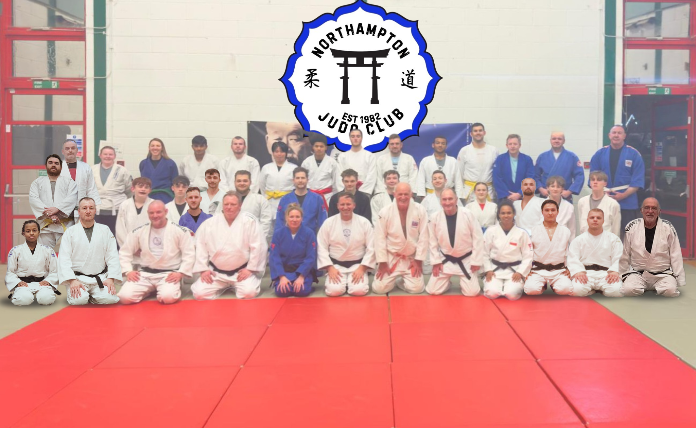

Northampton’s home of judo since 1982
Find your feet.
Own the mat.
Friendly, expert coaching for complete beginners, returning Judoka and competitors — from age five upwards.
No experience. No special fitness. No pressure.
Comfortable clothes are all you need.
Ask about a free trial →A place for every player
Choose your way in.
Learn the fundamentals, build confidence and progress at your own pace. Every class is coached for mixed experience levels.


65+
8-week course
Finding Your Feet
Adapted judo techniques for safer falling, better balance and more confidence.
Ask about the next course →Gi & No-Gi
Origin BJJ
Technical Jiu-Jitsu with a strong judo crossover, under the Nick Brooks Association.
Tuesday & Friday →Simple monthly options
Your first week is free.
Start with a trial, then choose the rhythm that works for you.
from
£16/month- Gold, twice weekly · £28
- Silver, once weekly · £16
- Single class · £8
from
£20/month- Gold, twice weekly · £32
- Silver, once weekly · £20
- Single class · £10
from
£16/month- Gold, twice weekly · £28
- Silver, once weekly · £16
- Single class · £8
British Judo Association membership is also required for insurance, grading and competition. Sibling memberships are available.

Northampton Judo Club archiveBuilt in Northampton
More than a dojo.
A community.
Founded by Brian Atkins in 1982, the club grew from 18 second-hand mats in a handmade frame to a home for generations of Judoka.
Brian Atkins, David Tompkins and Clive Douglas were there in the opening weeks. Their knowledge and spirit still shape a club built on respect, discipline and perseverance.
1982Founded in
Northampton
Read the full club history →
Northampton
The Judo Moral Code
How we show up.
These principles guide how we train, compete and treat one another — on and off the tatami.
CourtesyCourageHonestyHonourModestyRespectSelf-controlFriendship
Learn from experience
Coaching with pedigree.
National champions, international medallists and decades of experience — delivered in a welcoming, community-led environment.

From complete beginners to seasoned competitors, every Judoka is met at their level.
Meet the full coaching team →
“
The coaches are attentive and experienced and push you to be the best you can be. There’s no better place to start your judo journey.Jessica · Club member
Ready when you are
Step onto
the mat.
Your first week is completely free. Send us a message and a friendly coach will help you choose the right class.
Start your free week →Old Towcester Road
Northampton
NN4 8DG
Talk to usaction@northamptonjudo.com